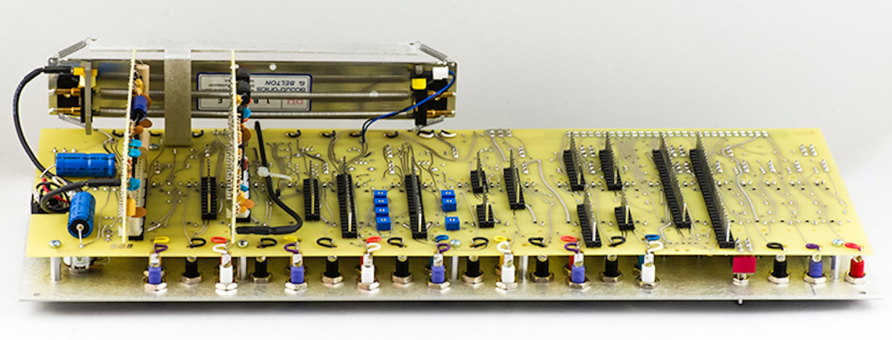
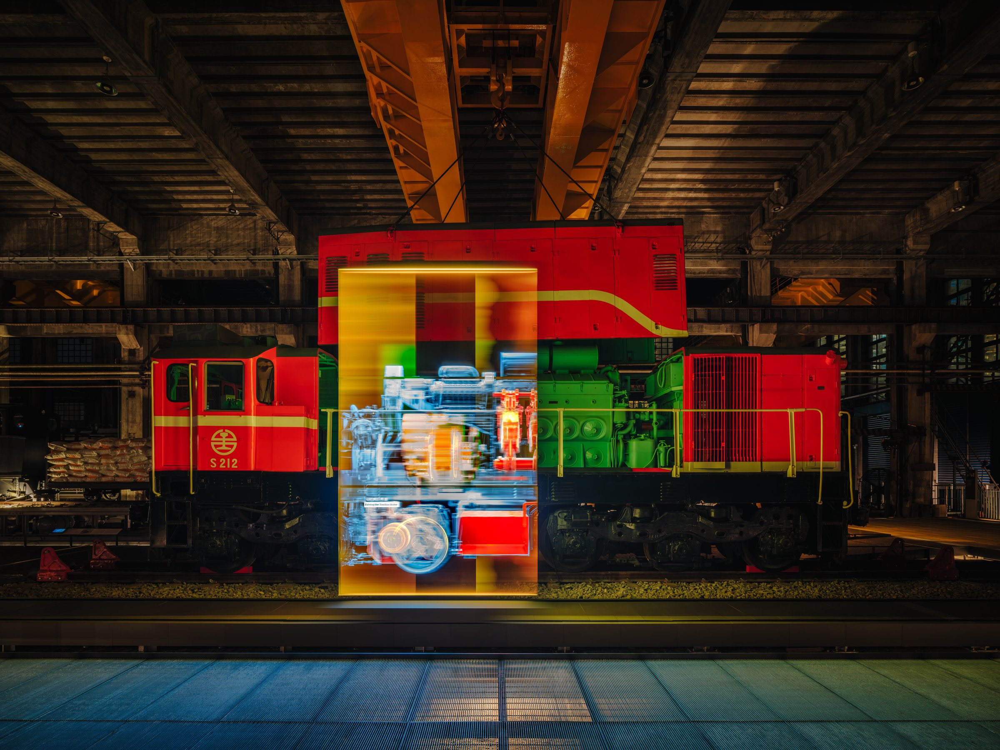
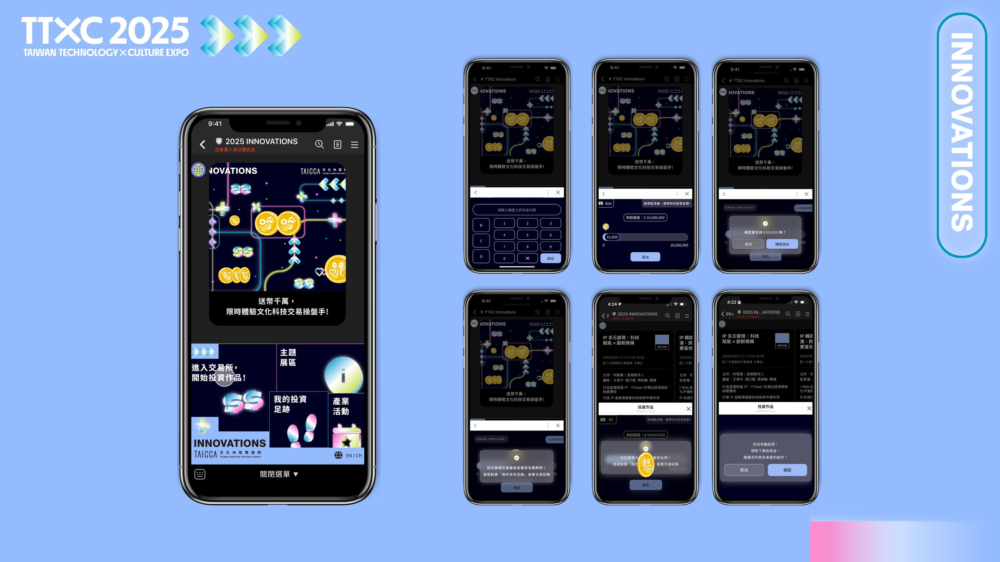
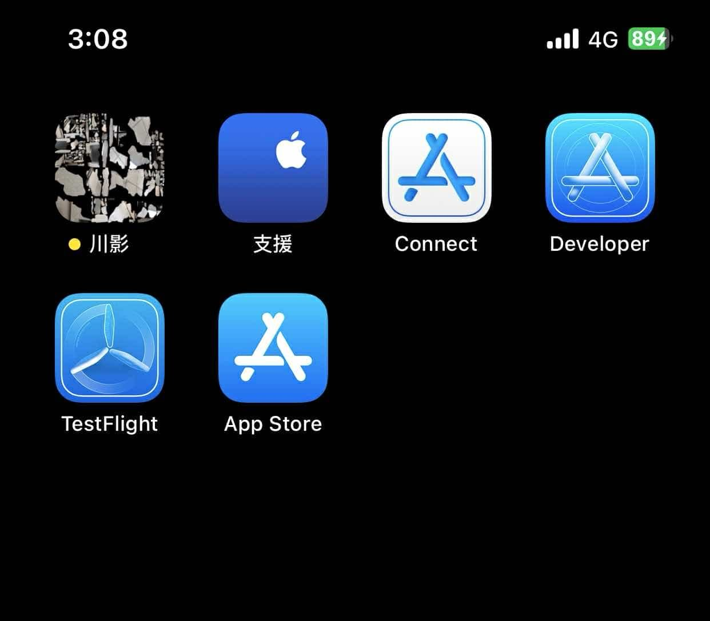
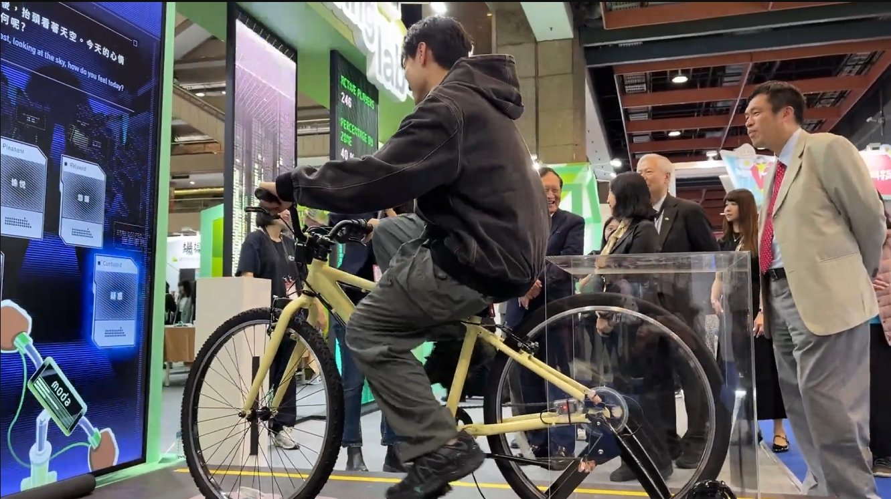
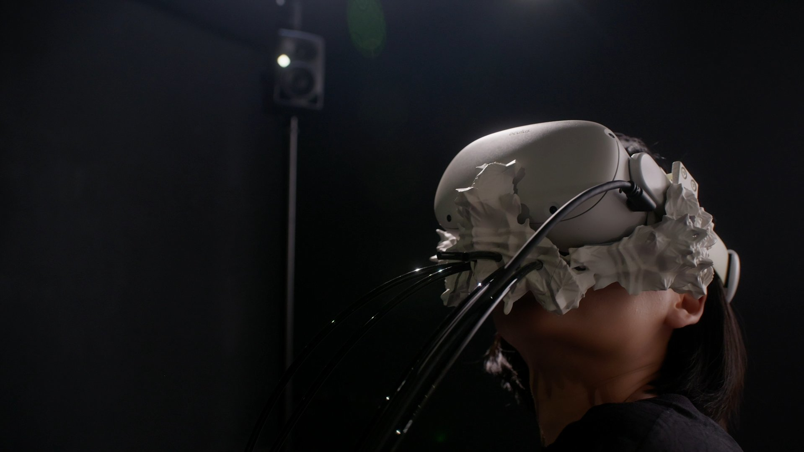
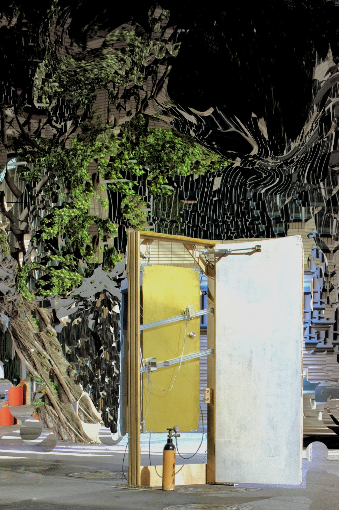
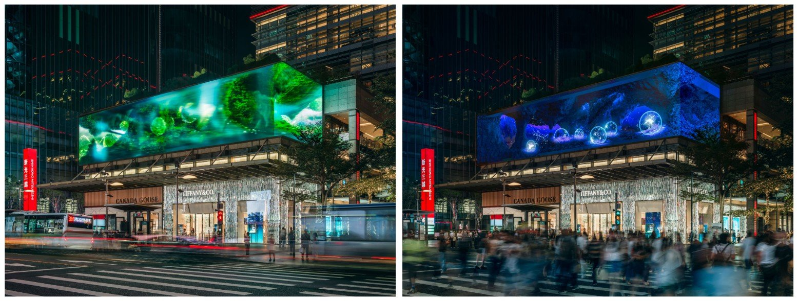
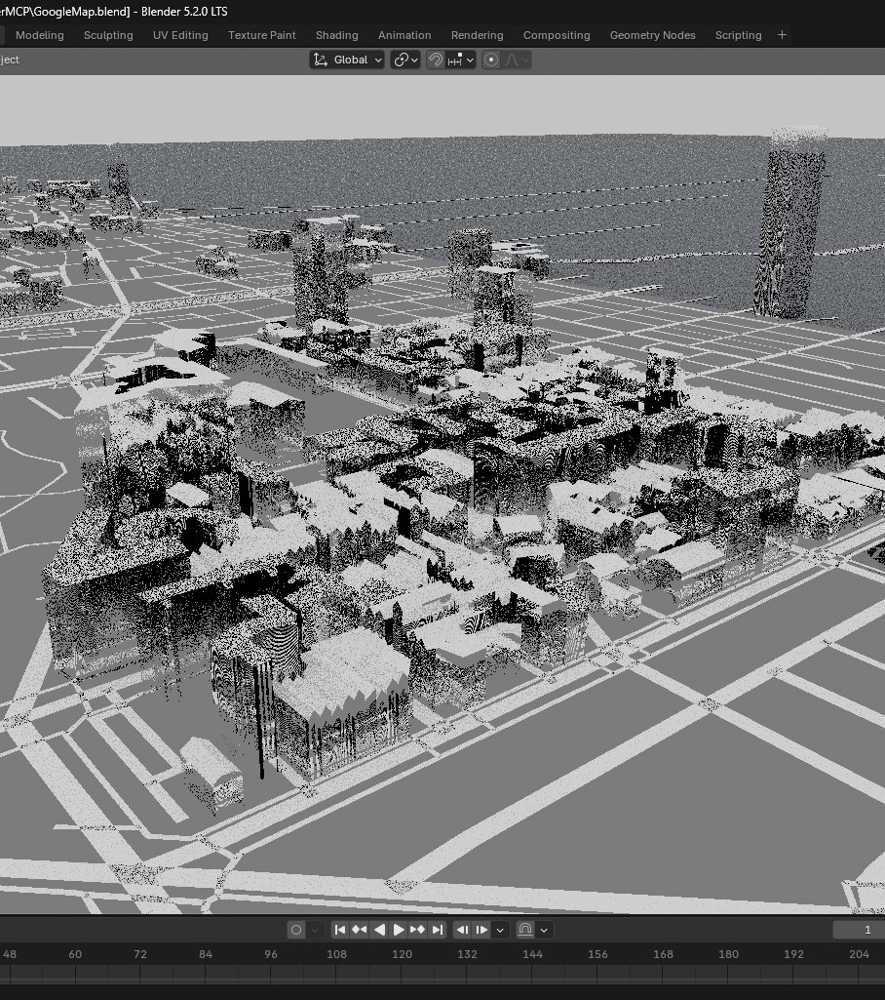

Tao Yun Huang 黃 韜 云
Hardware Engineer
01 — Profile
Experience & educationElectromechanical systems from the physical layer up — hand-etched PCB, closed-loop motion control, embedded firmware. Commissioned on site, then kept running.
Experience
Education
02 — Capability
Matrix & certifications- Circuit Design
- Schematic & layout · Hand etching · Analog design · Power distribution · Signal integrity · Component selection & BOM · EMC testing · Soldering & rework · Oscilloscope, logic analyser & multimeter · EMI and noise isolation · Root-cause analysis
- Mechanical & Motion
- Closed-loop PID across position, velocity and torque · Stepper & servo · Encoder feedback · Multi-axis synchronisation · Solenoid & pneumatic actuation · CO₂ / O₂ delivery and valve control · 3-D printed mechanism design under weight and balance constraints
- Field & Customer Delivery
- Installation, commissioning and handover · Scheduled preventive maintenance · On-site fault diagnosis · Remote monitoring · Client-facing operation through delivery · Multi-day continuous public duty under load
- Network & Embedded
- Ubiquiti UniFi — certified UWA and UFSP · Site Manager, Cloud Gateway, routing and switching · Complete remote and offline-capable service stood up from zero · Embedded C++ · UDP / OSC · UWB positioning
- Software & ML
- Python · PyTorch · Computer vision (YOLO) · Visual SLAM and 6-DoF pose estimation · Real-time inference on device · Unity · Swift / ARKit
Enough to stand up a complete networked service from nothing — gateway, routing, switching, wireless and remote access — and keep it reachable when the site has no usable uplink of its own.
03 — Works
09 sheets · 2022 — 2026








13-Voice CV Synthesizer
- 01One master and twelve sub-voices, each independently controlled through a shared voltage bus.
- 02Schematic, layout and hand-etched copper — every one of the thirteen boards.
- 03The hard part was holding control voltages accurate across all thirteen. Debugged board by board on the bench.
13-Voice CV Synthesizer
Work detailThe problem. Thirteen boards on one CV bus is a loading problem before it is a music problem. Each board added draws on the same reference, so pitch drifts as more come online; adjacent voices coupled into each other, and the shared supply sagged under simultaneous gates.
How it was found. Board by board on the bench, not by redesigning the rack — bus loading measured against reference droop, crosstalk isolated by driving one voice and scoping its neighbours, decoupling reworked until the rails held at worst case.
- Architecture
- 1 master · 12 sub-boards · shared CV bus
- Fabrication
- Schematic & layout · hand-etched copper · hand assembly
- Diagnostics
- Bus loading · inter-voice crosstalk · supply decoupling · rail droop under simultaneous load
- Instruments
- Oscilloscope · multimeter · bench supply
- Role
- Solo — design through assembly and debug
- Year
- 2023
Diesel-Electric Workshop
- 01A 60 kg armature moving on an overhead-crane axis under closed-loop PID position and velocity control.
- 02Inner torque and speed loop tuned against varying inertia, with animation playback synchronised to physical actuation.
- 03Handed over in 2025 and still on a scheduled PM cycle — on-site fault diagnosis plus remote monitoring.
Diesel-Electric Workshop
Work detailThe control problem. The load is heavy, the axis is long, and effective inertia changes with position. A single position loop overshoots at one end of travel and lags at the other, so it runs as position and velocity over an inner torque loop — tuned so one set of gains holds across the whole travel.
After handover. It did not end at commissioning. A public exhibit running daily, on a scheduled preventive cycle since 2025, with on-site fault diagnosis and remote monitoring between visits. Mechanical wear, not software, is what comes back.
- Client
- National Railway Museum, Taipei
- Studio
- IF Plus Art
- Moving load
- 60 kg armature on overhead-crane axis
- Control
- Closed-loop PID position / velocity over inner torque / speed loop · encoder feedback · multi-axis synchronisation
- Service
- Scheduled preventive maintenance · on-site fault diagnosis · remote monitoring
- Status
- Permanent · in service since 2025
- Doc
- Video ↗
Culture-Tech Exchange
- 01Visitors played on their own phones through LINE OA — no app to install, no account to make. That is what made the whole thing work.
- 02Mobile ↔ venue data synchronised across platforms on a fixed three-minute leaderboard cycle.
- 03Deployed and operated on site across four days — NT$4.7 bn in virtual capital placed by the public.
Culture-Tech Exchange
Work detailWhy LINE OA was the design. Anything requiring an app install loses most of an exhibition audience at the door. Building on the LINE Official Account made the entry cost zero — visitors opened something already on their phone. Every other decision followed from that one.
The constraint. Hundreds of phones and the venue display have to agree on one market state. A fixed three-minute settlement cycle: long enough to batch and reconcile, short enough that the room still feels live.
- Client
- TAICCA
- Studio
- IF Plus Art
- Entry point
- LINE Official Account — no app install
- Stack
- Unity · LINE OA · real-time networking · cross-platform data sync
- Cycle
- Fixed 3-minute leaderboard settlement
- Scale
- 4 days on site · NT$4.7 bn virtual capital placed
- Doc
- Video ↗
River of Shadows
- 01Localised by machine vision, not markers — nothing was attached to the building.
- 02A dense photographic survey of the corridor processed into a 3-D feature map, with runtime 6-DoF pose matching live camera frames against it.
- 03Drift and re-localisation handled in repeating, low-texture corridors — the hardest case for feature matching.
River of Shadows
Work detailLocalised without markers. The building could not be modified, so the corridor was photographed densely and processed into a 3-D feature map; at runtime the device estimates full 6-DoF pose by matching live camera frames against it.
Why that corridor is the hard case. Sparse texture that repeats — every bay looks like the next. Pose locks onto the wrong bay, or drifts, and the overlay slides off the wall. The work was in deciding when to trust a match and when to discard it.
- Venue
- NYCU Administrative Building, Hsinchu
- Localisation
- Area Target visual SLAM · dense photographic survey → 3-D feature map · runtime 6-DoF pose estimation
- Failure modes
- Drift and re-localisation in repeating, low-texture geometry
- Stack
- Swift · ARKit · feature matching · spatial audio
- Role
- Solo — iOS development, localisation, composition, audience navigation
- Doc
- Video ↗
AI Living Lab
- 01A custom instrumented bicycle — sensors on cadence, speed and route selection, with signal conditioning and normalisation.
- 02That live riding data drives a model that generates a soundtrack for that specific ride, in real time, as the rider pedals.
- 03Four days of continuous public duty, 1,000+ riders, no supervised reset between them.
AI Living Lab
Work detailHardware. The bicycle is instrumented from scratch — cadence, speed and route — with the analog side conditioned and normalised before anything downstream sees it. A child and an adult do not produce the same scale of raw values, and the model needs them to.
What public duty actually tests. Not peak performance — recovery. A thousand people used it with no controlled conditions: sensors knocked, riders dismounting mid-session. The engineering was making each session independent enough that a bad one did not take the next with it.
- Client
- Ministry of Digital Affairs (MODA)
- Hardware
- Custom instrumented bicycle · cadence, speed and route sensing · signal conditioning · data normalisation
- Generation
- Live riding dynamics → real-time generative audio model
- Output
- Per-rider soundtrack, printed as a cassette postcard
- Load
- 1,000+ riders over 4 continuous days
- Doc
- Video ↗
Circle of Confusion
- 01VR bound to a pneumatic apparatus — the headset and the physical rig run as one system, not two.
- 02CO₂ / O₂ delivery under valve control, driving the environment on a regulated respiratory cycle synchronised to the VR.
- 03A 3-D printed haptic mechanism designed to mount on the headset within its weight and balance limits.
Circle of Confusion
Work detailGas side. Two supplies, regulated delivery and valve control on a repeating cycle, phase-locked to what the viewer sees. Holding a steady rhythm is a matter of valve response, line volume and settling time — the commanded profile and the delivered profile are not the same curve.
Stated plainly. This is gas handling and flow fault-finding at atmospheric pressure. It is not vacuum or plasma process experience, and is not offered as such.
- Venue
- Digital Art Center, Taipei
- Gas system
- CO₂ / O₂ delivery · valve control · regulated respiratory cycle
- Mechanism
- 3-D printed headset-mounted haptic unit, within mass and balance limits
- Audio
- Deliberately incomplete Ambisonics array
- Not claimed
- No vacuum, plasma or hydraulic process experience
- Role
- Solo — concept, system, gas control, mechanism, composition
- Doc
- Video ↗
Threshold
- 01Stepper motors, solenoids and pneumatics driven in a closed feedback loop with real-time neural audio synthesis.
- 02The engineering constraint was the latency budget between sensing and actuation — and the mechanical settling time that budget has to absorb.
- 03Three builds over three years. v2 ran across a 49.4-channel Ambisonics system, the first at that scale in Taiwan.
Threshold
Work detailWhy a feedback loop is a stability problem. Any loop containing real mechanics has dead time in it. Solenoids and pneumatics do not respond instantly, and the structure keeps ringing after the actuator stops. Feed that into a synthesis stage reacting within milliseconds and the system either runs away or hunts.
Three versions, three rebuilds. Each was rebuilt around what failed in the last. v2 ran the modified RAVE pipeline across a 49.4-channel Ambisonics system — the first at that scale in Taiwan.
- Actuation
- Stepper motors · solenoids · pneumatics · closed-loop control
- Loop design
- Feedback stability · mechanical settling time · sensing-to-actuation latency budget
- Audio
- Modified RAVE pipeline · k-means · Max/MSP · Ambisonics
- Scale
- v2 — 49.4-channel Ambisonics, first at this scale in Taiwan
- Venues
- Taichung 2022 · C-LAB Taipei 2023 · NYCU 2024
- Role
- Solo — apparatus, actuator control, loop stability, all three versions
- Doc
- Video ↗
Moss Floating Layer
- 01A side project — a small terrarium breathing at its own pace against the velocity of Taipei's busiest retail district.
- 02Multichannel spatial audio system design and speaker layout for a permanent retail environment.
- 03Specified, integrated and commissioned on site, then handed to the venue to run unattended.
Moss Floating Layer
Work detailAudio for a room you do not control. A department store is a hostile acoustic environment: high ambient noise, hard reflective surfaces, an audience with no fixed listening position. Speaker layout was the whole problem — placing and aiming so the piece reads as spatial from anywhere, without bleeding into neighbouring tenants.
Handover. Commissioned on site, then handed over to run permanently unattended — which sets the real requirement: it has to come up correctly every morning with nobody technical present.
- Client
- SCOPE TECH
- Venue
- Shin Kong Mitsukoshi A9, Taipei
- Scope
- Multichannel spatial audio system design · speaker layout · retail AV integration · on-site commissioning
- Status
- Permanent · unattended daily operation
- Note
- Side project
- Doc
- Video ↗
Blender MCP Bridge
- 01A TCP socket server running inside Blender, so an external agent can build and modify scenes directly instead of me clicking through them.
- 02Incoming scripts are queued and executed on Blender's main thread via
bpy.app.timers— touching the API from the socket thread crashes the process. - 03Used to pull OpenStreetMap city data into a scene and render it procedurally, plus geometry and material studies.
Blender MCP Bridge
Work detailThe real problem is threading. Blender's Python API is not
thread-safe — call bpy from the socket's worker thread and the process
dies, sometimes several operations later. The server accepts on a daemon thread but
never touches the scene there: scripts go onto a lock-guarded queue that a
bpy.app.timers callback drains on the main thread. That one indirection
is the whole design.
Why build it. The same reason I instrument anything — describe the scene once and have it constructed repeatably, rather than rebuilding it by hand every time I change my mind.
- Transport
- TCP socket,
127.0.0.1:65432, length-framed JSON - Concurrency
- Daemon accept thread · lock-guarded script queue ·
bpy.app.timersdrain on the main thread - Scene data
- OpenStreetMap import — footway, pedestrian and railway layers
- Render
- Blender 5.2 LTS · Cycles · GPU compute
- Role
- Solo — server, protocol, scene pipeline
04 — Contact
Available immediatelyOpen to full relocation worldwide.
bernie5@dataraw.tech- Phone
- +886 983 717 444
- Based
- Taiwan
- Documents
- CV